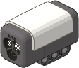
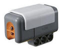

(H) Using the Light Sensor
The programs in this section give examples of using
the Multi-Bot's Line Sensor with the
Color Sensor replaced by the standard Light Sensor, which is
included in the LEGO Education NXT set (9797) and the original version
of the Retail NXT set (8527).
| Note: The Light Sensor
programs require that you replace the Color Sensor in
the
Line Sensor building
instructions with the Light Sensor.
For programs using the Color Sensor,
see Using the Color Sensor. |

NXT 2.0 Color Sensor |

Light Sensor |
Line Sensing
|
Program |
Description and Observations |
Attachments |
| H1-FindLine |
|
 |
|
This
program shows the simplest way to use the Light Sensor, which is
to the Wait for Light Sensor block. A Move
Unlimited block starts the robot driving forward, then
the program continues to the Wait for Light Sensor block,
which will wait until the sensor sees a "dark" color, then a Move
Stop block stops the robot. Try
making a black line on a light-colored floor with black
electrical tape, then start the robot facing perpendicular to
the line at any distance away. It should stop right at the
line. The Light Sensor outputs a number
from 0 to 100 that indicates the brightness of the light seen by
the sensor (0 is darkest, 100 is brightest). In order to
test for a "dark" color, the Wait for Light Sensor block
specifies a brightness value to compare against and a comparison
direction (< or >) in the Light field. In this
example, the test "< 50" is used, but you may need to
modify the 50 value for your conditions, or calibrate the
light sensor to adjust its readings (see below). |
Treads
Line Sensor
(Substitute
Light Sensor) |
| H2-DispLight |
|
 |
|
Since
readings from the Light Sensor will vary depending on the
surface and lighting conditions, you may want to measure the
sensor readings under your test conditions to determine good
brightness values to test against.
The H2-DispLight
program is a utility program that simply displays the current
reading from the Light Sensor on the NXT screen and keeps
updating it, so you can use this program to determine what
brightness values to expect from your robot in different
circumstances.
The H2-DispLight
program uses the DisplayNum My Block, which provides a
convenient way to display a number on the NXT screen with a
label in front, which is useful in a variety of different
situations.
As an alternative to measuring brightness
values and modifying your programs for different conditions, the
NXT software includes a tool to calibrate the Light
Sensor, which is a way to adjust its readings so that the
minimum expected brightness will be output as 0, and the maximum
expected brightness will be output as 100. After
calibrating, you can be sure that, for example, the brightness
test of "< 50" in the H1-FindLine program will be True over the line but False
over the open floor, without needing to adjust the 50
value in the program for different lighting or floor conditions.
To the use the NXT calibration tool, in the
Tools menu, pick Calibrate Sensors, then select
Light Sensor and the correct port on the NXT (3 here).
The software will download a program named Calibrate to
the NXT (and will also run it right away). Take the robot
to the surface to be used and place it all the way on the floor
as if it were driving (don't hold it off the floor in your
hands, that will change the readings). Follow the prompts
in the Calibrate program to sample the Min
(darkest, typically with the sensor centered over the black
line) and Max (lightest, typically over open floor)
brightness values.
After using the Calibrate program, you
should be able to use the H2-DispLight program to verify that the sensor reads 0 (or
close to 0) directly over the black line, and close to 100 over
the open floor. You can then go on to test the
calibrated brightness of other colors or areas on the
surface for more detailed tests in your programs.
Note that the H2-DispLight program always displays calibrated
brightness values, which are the same values that your programs
will get from the Light Sensor. In contrast, the View
Reflected Light feature in the NXT brick menu displays
un-calibrated brightness, which is not as useful. |
Treads
Line Sensor
(Substitute
Light Sensor) |
| H3-SumoLight |
|
|
|
This
program extends the H1-FindLine
program to make the robot back up and turn when it sees a black
line, and then the whole sequence is repeated in a Loop.
Now if you make a large black square (or any
shape) with electrical tape on a light-colored floor and start
Multi-Bot inside the box, it will try to drive around inside the
box "bouncing off" the borders and staying inside.
Staying inside an area marked with a colored
border is the first step in playing a "Robot Sumo" game, where
two robots try to push each other outside of the "ring".
You can play a simple practice Robot Sumo game with one
Multi-Bot robot by placing various objects inside the ring with
the robot, and see if Multi-Bot with an attachment such as the
Sumo Pusher can push them all
outside of the ring while staying inside itself. Try
changing the time of the back up and the angle of the turn in
the LeftPivotAngle block to get different driving
patterns and see which work best. |
Treads
Line Sensor
(Substitute
Light Sensor) Sumo Pusher
(Optional)
|
Line Following with the Light
Sensor
|
Program |
Description and Observations |
Attachments |
| H4-LineFollow2 |
|
 |
|
This
program shows a simple way to make a
line following program using the Light Sensor in Light Sensor
mode. If you put a black line with electrical tape on a
light-colored floor, then Multi-Bot will follow the line, even
if the line has curves in it. Be sure to calibrate
the light sensor first, as explained in the
H2-DispLight program above.
Note that in this kind of line following, the
robot is actually following the right edge of the
line, not down the middle of the line as you might expect.
The robot tries to keep the black line just to the left of the
sensor and the open floor to the right of the sensor, by
zigzagging back and forth on either side of the edge,
alternately seeing the line and the floor. |
Treads
Line Sensor
(Substitute
Light Sensor) |
| H5-LineFollow4 |
|
|
|
This
program extends the
H4-LineFollow2 program to
use more detailed motor control for the line following, which
will allow it to drive faster and smoother but still be able to
take tight turns when necessary.
The H4-LineFollow2 program is an example of a "Two State" line
follower, because it chooses from two different motor settings
(turn left or turn right) depending on the brightness seen from
the sensor. A limitation of a two state line follower is
that it can only do one kind of turn in each direction. If
you make the turns gradual, it will drive smoothly but not be
able to follow tight turns in the line. If you make the
turns tight, it will be able to follow tight turns in the line
but will drive slowly and zigzag a lot even when the line is
straight.
The "Four State" strategy in
H5-LineFollow4 will choose
between four different kinds of turns (sharp right, gradual
right, gradual left, sharp left) depending on the sensor value.
This will allow it to use the gradual turns when close to the
line edge (when the line is mostly straight) but switch to the
tight turns when the sensor falls away from the edge, as will
happen for tight turns in the line.
In order to divide the sensor values into four
useful ranges, it is necessary to know the exact range of values
expected, so it is important to calibrate the Light
Sensor first. When the sensor values are known to be from 0
to 100, the program can easily assign a tight turn to the last
10% of the top and bottom of the range, but use gradual turns
elsewhere.
You can try adjusting the motor speeds used in
the four different kinds of turns used in
H5-LineFollow4 to change the
response to suit different robots and different courses. |
Treads
Line Sensor
(Substitute
Light Sensor) |
| H6-ProFollow |
|
 |
|
This
program shows a mathematical approach to line following that is
the logical extension of the technique used in
H5-LineFollow4, where
different sensor readings result in different tightness of
turns. This approach is called a "Proportional" line
follower and produces results that are superior to a two
state or four state line follower.
Thinking about how the "Four State" line follower in
H5-LineFollow4 works, can
you imagine an "Eight State" approach with four different
degrees of turn tightness in each direction? How about
even more states? Programming each of these states
individually would be very tedious. Fortunately, we can
come up with a mathematical relationship between the sensor
reading and the motor power desired and simply calculate the
motor power based on the sensor reading directly, without the
need for any Switch blocks to separate the cases.
In the H6-ProFollow program, Math blocks are used to
calculate a motor response for each possible sensor reading, so
that the amount of turning is proportional to the
approximate distance that the sensor is away from the edge of
the line that it is following. The farther away from
center, the tighter the turn. The approximate distance
from the center of the line is calculated as the difference
between the expected sensor reading at the center (50) and the
actual sensor reading.
Understanding the math behind this approach
may be harder than understanding the
H5-LineFollow4 program, but
note that the resulting program is actually simpler in some ways,
and it should result in much better line following. |
Treads
Line Sensor
(Substitute
Light Sensor) |
[Back to Programs Index]
|